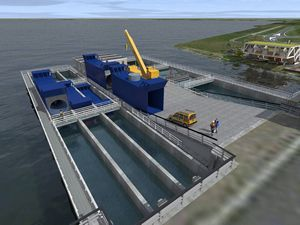

First Tidal Energy Turbine with Lockheed Martin Technology Deployed Off Scotland Coast
Under contract and in partnership with Atlantis, Lockheed Martin designed the 1.5 megawatt AR1500 turbine. In addition to system design, Lockheed Martin developed, manufactured and delivered two innovative subsystems, the Yaw Drive System (YDS) and the Variable Pitch System (VPS). The two elements enable the turbine to rotate autonomously around its base, so it always faces into the tidal flow. The pitch angle of the turbine blades also adjusts to optimize the power generation in a given tidal stream.
Installation and connection of the AR1500 was completed with record-breaking efficiency in less than 60 minutes, representing a significant time reduction compared to most similar systems. The operation marks the first time a tidal turbine has been installed and connected to the shore instantaneously.

"Tidal turbines must be highly reliable and resilient to withstand and operate within the tough environment of a sea floor," said Frank Armijo, vice president of Lockheed Martin Energy. "These design requirements are similar to the reliability and durability needs of many of our aerospace programs. With innovations in advanced manufacturing and materials, and experiences gained in the design and production of undersea systems, space projects and aeronautics, we're now helping to make tidal energy more reliable and effective."
Tidal energy is produced by the surge of ocean water during the rise and fall of tides. Submerged rotors harness the power of the ocean currents to drive generators, which in turn produce electricity.
The MeyGen project is currently the largest planned tidal energy project in the world. The site, in the Pentland Firth, just 2 kilometers from Scotland's northeast tip, covers some of the fastest flowing waters in the United Kingdom. Atlantis has a goal to deploy nearly 270 turbines to generate about 400 MW of energy, enough to power 175,000 homes.
In 2013, Lockheed Martin and Atlantis entered into a teaming partnership to develop technology, components and projects in the tidal power sector on a global basis, beginning with the AR1500.
Lockheed Martin Energy is a line of business within Lockheed Martin that delivers comprehensive solutions across the energy industry to include demand-response solutions, energy efficiency, energy storage, nuclear systems, tidal energy technologies and bioenergy generation.